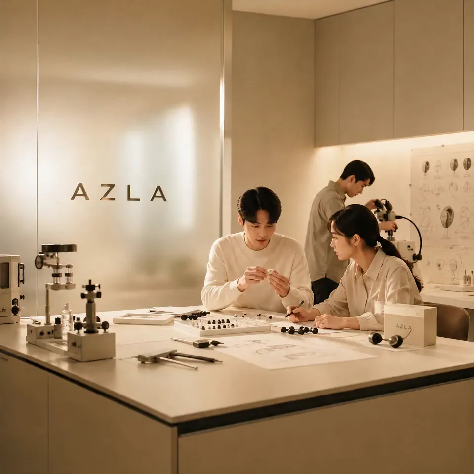
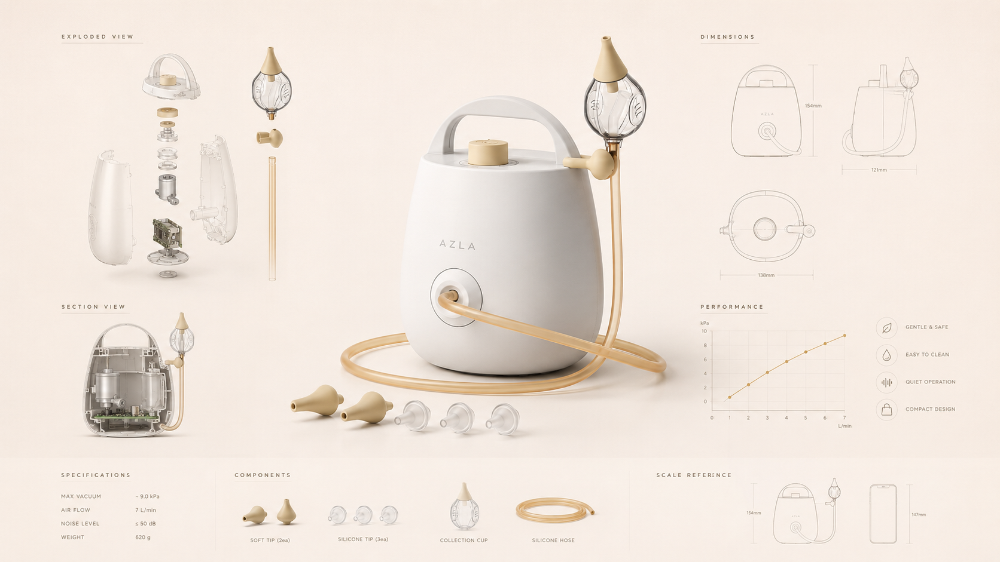
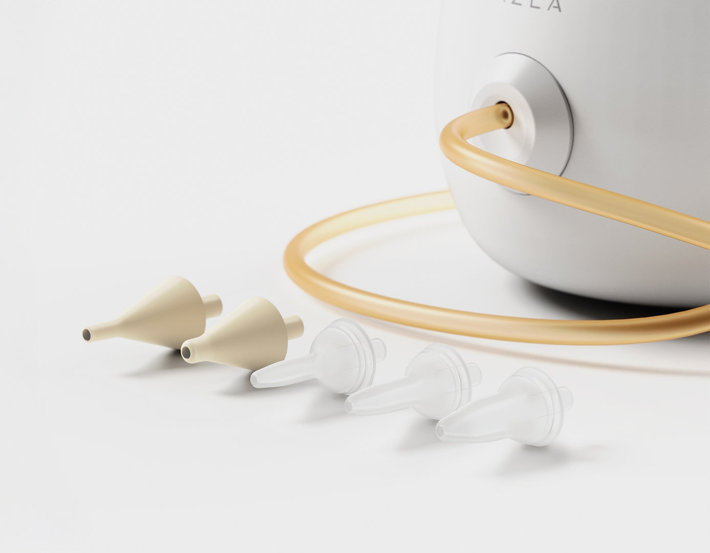
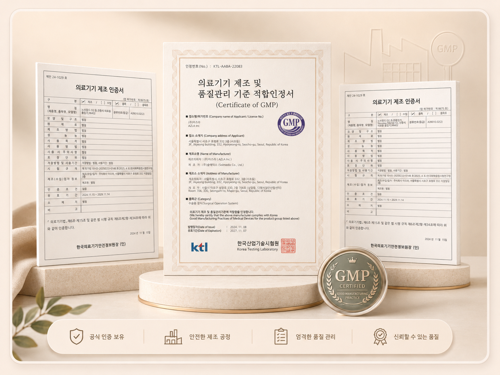

아즈라 법인 설립
제품 개발과 제조 기반을 갖춘 브랜드로 꾸준히 성장하고 있습니다.
AZLA는 감각 제품 개발과 정밀 소재 설계를 기반으로 성장해온 브랜드입니다. Nouveau Monde 02는 그 경험을 아이의 코에 닿는 제품 구조와 사용 흐름으로 확장한 콧물흡입기입니다.
최고급 실리콘 금형 설계기술은 AZLA의 최고 기술 중 하나로, 누보몽드 02의 노즐 설계와 제조에 적용되었습니다.

충북 제천에 위치한 자가 공장(본사 서울소재)에서 생산한 제품을 세계로 수출합니다. 주요 수출국은 일본이며, 약 60개국에 판매를 진행하는 글로벌 기업입니다. 제품 생산부터 A/S까지 뛰어난 퀄리티를 보장합니다.
아즈라는 사람의 몸에 닿는 정밀한 접점 제품을 만들어온 경험을 바탕으로, 누보몽드 02의 노즐과 사용 흐름을 설계했습니다.
제품 개발과 제조 기반을 갖춘 브랜드로 꾸준히 성장하고 있습니다.
수출유망 기업선정, 100만불 수출탑 수상, 수출 210만불 달성, 일본 VGP 2020개발상 수상, 삼성전자 SMAPP 인증취득, 중기부 표창장
수출 강소기업 1000+, 고용노동부선정 강소기업 선정, 300만불 수출탑 수상, 의료기기제조 및 사업자 인증, 61개국 수출등
누보몽드 02는 약 58dB대 저소음 설계와 7단계 흡입 조절을 제공합니다.
(실제 체감 소음과 사용감은 공간, 거리, 흡입 단계에 따라 달라질 수 있습니다.)
콧물흡입기를 사용하며 아이들이 경험하는 공포감을 줄이기 위해, 저소음 설계와 단계별 흡입 조절 기능을 도입했습니다. 아이의 상태와 보호자의 선호에 따라 조절할 수 있는 기능으로, 보다 부드러운 사용 경험을 제공합니다.


기본 노즐과 커스텀 노즐을 포함한 5종 실리콘 노즐 구성을 제공합니다. 노즐은 코 주변에 직접 닿는 부품이므로, 가장 안전하고 좋은 소재를 사용하여야 합니다.
생산 공장, 인증 이력, 제조 기반과 같은 정보는 구매 전 확인해야 할 중요한 요소입니다.
아즈라는 의료기기 제조 및 사업자 인증을 획득 하였고, GMP 인증을 받은 국내 공장에서 생산하여 뛰어난 품질 관리와 빠른 A/S가 가능합니다.
제품을 사용함에 있어 반드시 필요한 인증을 취득하였습니다.(전자파, 전기안전, 피부감작성 등)

AZLA의 제조와 수출 기반을 이해하기 위한 참고자료 입니다.
제품 개발과 제조 기반을 구축해왔습니다.
국내 제조 기반을 확장했습니다.
품질, 환경, 안전보건 관련 인증 체계를 마련했습니다.
80억 매출 달성, 이노비즈 인증, 수출 강소기업 1000+, 고용노동부선정 강소기업 선정, 300만불 수출탑 수상
의료기기 제조 관련 기반과 글로벌 판매망을 확대했습니다.
헬스 케어 제품군으로 신규 라인업을 확장하였습니다.
흡입 단계, 노즐, 세척 구조, 의료기기 고지를 제품 페이지에서 확인할 수 있습니다.